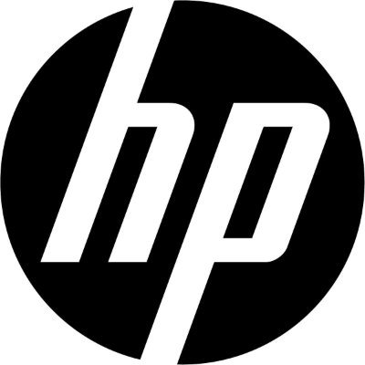

MEJORES COMPUTADORES DE HOY
Aqui encontraras los mejores computadoras:
ASUS

ASUS TUF Gaming F15 (i5-10300H, 16GB, 512GB, GTX1650-4GB, Sin Sistema Operativo) El primero de nuestros portátiles Asus favoritos es el Gaming F15, que posee una CPU Intel Core i5-10300H, cuyo rendimiento medio es suficiente para juegos novedosos.
ASUS surge de las últimas 4 letras de Pegasus, el caballo alado de la mitología griega, símbolo de inspiración artística y aprendizaje. ASUS personifica la fortaleza, el espíritu creativo y la pureza representada por esta majestuosa criatura, alcanzando con cada nuevo lanzamiento, nuevas cuotas de calidad e innovación.
|
ACER
Acer - Aspire E15 8th Gen Intel Core Full HD. Esta laptop tiene con varios detalles de alto nivel. Como su procesador Intel core i3 8130U de octava generación, de 2.2 GHz, el cual te permite con su tecnología Turbo Boost 3.4 GHz , hacer rendir aún más el procesador.
Para Fabricar Acero se tiene que echar en el alto horno una mezcla de mineral de hierro (hierro con impurezas) y un combustible llamado Cok (parecido al carbón) que además de ser combustible, separa las impurezas (llamadas ganga) del resto de material.
|
DELL
Dell Inspiron 15 Laptop (último modelo 2021), pantalla táctil FHD de 15.6 pulgadas, procesador Intel Core i5-1035G1 de 10ª generación, 16 GB de RAM, SSD PCIe de 256 GB, cámara web, HDMI, Bluetooth, WiFi, Windows 10 Home, negro.
¿Cómo se origino Dell?
La historia de Dell comienza cuando en 1984 su fundador Michael Dell aún era estudiante de medicina de la universidad de Texas en Austin, el fundó una compañía llamada PC Limited con un capital de 1.000 dólares, ésta compañía se dedicaba a vender PCs compatibles con IBM construidos con componentes.
|
HP

Laptop Victus by HP 16-d0523la 16.1" Intel Core i7-11600H 512GB SSD 8GB RAM. Laptop HP Omen 15-en0001la 15.6" AMD Ryzen 7 4800H 512GB SSD 8GB RAM. Laptop HP Pavilion x360 14-dy0506la 14" Intel Core i5-1135G7 256GB SSD 8GB RAM.
La compañía fue fundada en 1939 por William Hewlett y David Packard, compañeros en la universidad de Stanford, en un garaje desarrollaron un primer oscilador de audio . Hewlett-Packard, empresa de tecnología estadounidense, con sede en Palo Alto, California
|